JEE Main 2026 (Session 2), 4 Apr Shift 2: worked solutions for review
Questions and options are NTA’s own images; the green option is NTA’s final key. Every solution below was written by Claude
and checked against NTA’s final key. It is not NTA’s solution. Please mark anything unclear or wrong.
Q1 · Mathematics · MCQ · ID 695278376
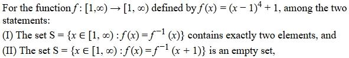
Hint 1: f is increasing on [1, ∞). For an increasing function, where can the graphs of f and f−1 meet?
Hint 2: They meet only on the line y = x, so f(x) = f−1(x) ⇔ f(x) = x. For (II), f−1(y) = 1 + (y − 1)1/4, so f−1(x + 1) = 1 + x1/4.
What this tests: Intersections of a function with its inverse.
1. (I): (x − 1)4 + 1 = x ⇔ (x − 1)4 = x − 1 ⇔ x − 1 = 0 or 1, so x = 1 or 2. Exactly two elements: TRUE.
2. (II): (x − 1)4 = x1/4. At x = 2 the left side is 1 and the right is about 1.19; at x = 3 it is 16 vs 1.32. They cross between 2 and 3, so S is not empty: FALSE.
Answer: (1)
If this felt hard: For increasing functions, f(x) = f−1(x) reduces to f(x) = x. Revise 'Relations and Functions' (inverse functions).
Claude’s answer: 1 · NTA final key: 1 · agrees · Answer recomputed with SymPy (tools/verify_pyq_solutions.py)
Q2 · Mathematics · MCQ · ID 695278377
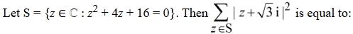
(1) 
(3) 
(4) 
Hint 1: Solve the quadratic first. Then add √3 i to each root.
Hint 2: z = −2 ± 2√3 i. Find |z + √3 i|2 for each root.
What this tests: Roots of a quadratic with complex roots; modulus.
1. z + √3 i = −2 + 3√3 i, so |·|2 = 4 + 27 = 31.
2. z + √3 i = −2 − √3 i, so |·|2 = 4 + 3 = 7.
3. Sum = 38.
Answer: (4)
If this felt hard: Revise 'Complex Numbers' and 'Quadratic Equations'.
Claude’s answer: 4 · NTA final key: 4 · agrees · Answer recomputed with SymPy (tools/verify_pyq_solutions.py)
Q3 · Mathematics · MCQ · ID 695278378
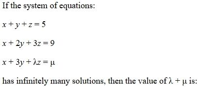
(1) 
(4) 
Hint 1: Infinitely many solutions: the coefficient determinant is 0 and the system is consistent.
Hint 2: det = λ − 5, so λ = 5. Notice equation 3 must equal 2 × (equation 2) − (equation 1).
What this tests: Infinitely many solutions of a linear system.
1. det[[1,1,1],[1,2,3],[1,3,λ]] = λ − 5 = 0, so λ = 5.
2. 2(x + 2y + 3z) − (x + y + z) = x + 3y + 5z = 2(9) − 5 = 13, so μ = 13.
3. λ + μ = 18.
Answer: (2)
If this felt hard: Spotting the third equation as a combination of the first two is the fastest route. Revise 'Matrices and Determinants'.
Claude’s answer: 2 · NTA final key: 2 · agrees · Answer recomputed with SymPy (tools/verify_pyq_solutions.py)
Q4 · Mathematics · MCQ · ID 695278379
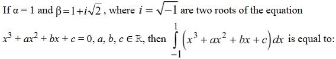
Hint 1: Real coefficients mean complex roots come in conjugate pairs. What is the third root?
Hint 2: Roots 1, 1 + i√2, 1 − i√2. The cubic is (x − 1)(x2 − 2x + 3).
What this tests: Conjugate roots; integrals of odd and even functions.
1. Cubic = x3 − 3x2 + 5x − 3.
2. Over [−1, 1], the odd terms x3 and 5x integrate to 0.
3. ∫(−3x2 − 3) dx from −1 to 1 = −2 − 6 = −8.
Answer: (3)
If this felt hard: Revise 'Quadratic Equations' (conjugate roots) and 'Definite Integrals' (odd/even properties).
Claude’s answer: 3 · NTA final key: 3 · agrees · Answer recomputed with SymPy (tools/verify_pyq_solutions.py)
Q5 · Mathematics · MCQ · ID 695278380
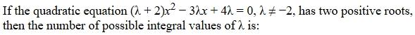
(1) 
(2) 
(3) 
(4) 
Hint 1: Two positive roots needs: discriminant ≥ 0, sum > 0 and product > 0.
Hint 2: Sum = 3λ/(λ + 2), product = 4λ/(λ + 2), D = 9λ2 − 16λ(λ + 2) = −λ(7λ + 32).
What this tests: Conditions on the roots of a quadratic.
1. Product > 0: λ > 0 or λ < −2.
2. D ≥ 0: −32/7 ≤ λ ≤ 0.
3. Together: −32/7 ≤ λ < −2 (sum > 0 holds here too).
4. Integers: −4 and −3, so 2 values.
Answer: (2)
If this felt hard: Write all three conditions before solving. Missing one is the usual slip. Revise 'Quadratic Equations'.
Claude’s answer: 2 · NTA final key: 2 · agrees · Answer recomputed with SymPy (tools/verify_pyq_solutions.py)
Q6 · Mathematics · MCQ · ID 695278381
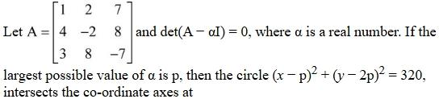
Hint 1: det(A − αI) = 0 means α is an eigenvalue. Find the characteristic polynomial and its largest real root.
Hint 2: The characteristic polynomial factors as (λ − 8)(λ2 + 16λ + 40). So p = 8. Check where the circle meets each axis.
What this tests: Eigenvalues and circle–axis intersections.
1. p = 8: circle (x − 8)2 + (y − 16)2 = 320.
2. y = 0: (x − 8)2 = 64, so x = 0 or 16. x = 0: (y − 16)2 = 256, so y = 0 or 32.
3. The origin is counted twice, so the distinct points are (0,0), (16,0), (0,32): 3 points.
Answer: (3)
If this felt hard: The trap is answering 4: the circle passes through the origin, so one point is shared. Revise 'Matrices' and 'Conic Sections' (circle).
Claude’s answer: 3 · NTA final key: 3 · agrees · Answer recomputed with SymPy (tools/verify_pyq_solutions.py)
Q7 · Mathematics · MCQ · ID 695278382
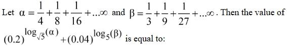
(1) 
(2) 
(3) 
(4) 
Hint 1: Sum the two GPs first.
Hint 2: α = (1/4)/(1 − 1/2) = 1/2 and β = (1/3)/(1 − 1/3) = 1/2. Then write 0.2 = 5−1 and 0.04 = 5−2.
What this tests: Infinite GP sums and log laws.
1. (0.2)log√5(1/2) = 5−2log5(1/2) = (1/2)−2 = 4.
2. (0.04)log5(1/2) = 5−2log5(1/2) = 4.
3. Sum = 8.
Answer: (3)
If this felt hard: Revise 'Sequences and Series' and the rules alogab = b and log√a = 2loga.
Claude’s answer: 3 · NTA final key: 3 · agrees · Answer recomputed with SymPy (tools/verify_pyq_solutions.py)
Q8 · Mathematics · MCQ · ID 695278383
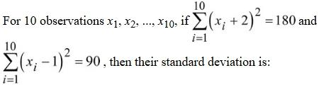
(1) 
Hint 1: Expand both sums in terms of Σx and Σx2.
Hint 2: Σx2 + 4Σx + 40 = 180 and Σx2 − 2Σx + 10 = 90.
What this tests: Mean and variance from shifted sums.
1. Subtracting: 6Σx + 30 = 90, so Σx = 10 and Σx2 = 100.
2. Variance = 100/10 − 12 = 9, so SD = 3.
Answer: (4)
If this felt hard: Revise 'Statistics': σ2 = Σx2/n − (Σx/n)2.
Claude’s answer: 4 · NTA final key: 4 · agrees · Answer recomputed with SymPy (tools/verify_pyq_solutions.py)
Q9 · Mathematics · MCQ · ID 695278384
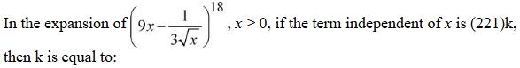
Hint 1: Write the general term and set the power of x to 0.
Hint 2: Tr+1 = 18Cr(9x)18−r(−1/(3√x))r: power of x = 18 − 3r/2.
What this tests: Term independent of x in a binomial expansion.
1. 18 − 3r/2 = 0, so r = 12.
2. Term = 18C12 × 96 × (1/3)12 = 18C12 = 18564.
3. 18564 = 221 × 84, so k = 84.
Answer: (1)
If this felt hard: Revise 'Binomial Theorem'. Notice 96 = 312 cancels neatly.
Claude’s answer: 1 · NTA final key: 1 · agrees · Answer recomputed with SymPy (tools/verify_pyq_solutions.py)
Q10 · Mathematics · MCQ · ID 695278385
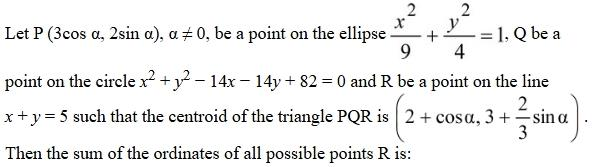
(1) 
(2) 
(3) 
(4) 
Hint 1: The centroid gives P + Q + R. Subtract P to get Q + R.
Hint 2: Q + R = (6, 9). R is on x + y = 5, so Q is on x + y = 10. Q is also on the circle with centre (7, 7) and radius 4.
What this tests: Centroid and loci with a circle and a line.
1. Circle (x − 7)2 + (y − 7)2 = 16 meets x + y = 10 where x2 − 10x + 21 = 0: Q = (3, 7) or (7, 3).
2. R = (6, 9) − Q = (3, 2) or (−1, 6).
3. Sum of the ordinates of R = 2 + 6 = 8.
Answer: (4)
If this felt hard: Revise 'Straight Lines' and 'Conic Sections'. Turning 'R on a line' into 'Q on a line' is the key step.
Claude’s answer: 4 · NTA final key: 4 · agrees · Answer recomputed with SymPy (tools/verify_pyq_solutions.py)
Q11 · Mathematics · MCQ · ID 695278386
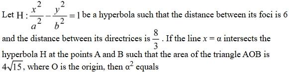
(1) 
Hint 1: Foci distance 2ae = 6 and directrix distance 2a/e = 8/3. Find a and e.
Hint 2: a2 = 4, e = 3/2, b2 = a2(e2 − 1) = 5. Area of AOB = |α| × |y|, where y2 = 5(α2/4 − 1).
What this tests: Hyperbola: foci, directrices, chord area.
1. ae = 3 and a/e = 4/3, so a2 = 4 and e = 3/2; b2 = 5.
2. Area2 = α2 × 5(α2/4 − 1) = 240, so α2(α2 − 4) = 192.
3. α2 = 16.
Answer: (2)
If this felt hard: Revise 'Conic Sections': hyperbola (b2 = a2(e2 − 1)).
Claude’s answer: 2 · NTA final key: 2 · agrees · Answer recomputed with SymPy (tools/verify_pyq_solutions.py)
Q12 · Mathematics · MCQ · ID 695278387
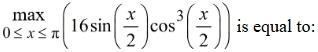
Hint 1: Put t = x/2 in [0, π/2] and maximise 16 sin t cos3t.
Hint 2: Derivative: cos4t − 3sin2t cos2t = 0, so tan2t = 1/3.
What this tests: Maximum of a trigonometric product using derivatives.
1. t = π/6.
2. 16 × (1/2) × (√3/2)3 = 16 × 3√3/16 = 3√3.
Answer: (2)
If this felt hard: Revise 'Application of Derivatives' (maxima and minima).
Claude’s answer: 2 · NTA final key: 2 · agrees · Answer recomputed with SymPy (tools/verify_pyq_solutions.py)
Q13 · Mathematics · MCQ · ID 695278388
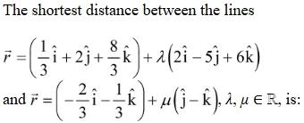
(2) 
Hint 1: Shortest distance between skew lines = |(a2 − a1)·(b1 × b2)|/|b1 × b2|.
Hint 2: b1 × b2 = (2, −5, 6) × (0, 1, −1) = (−1, 2, 2), with magnitude 3. a2 − a1 = (−1, −2, −3).
What this tests: Shortest distance between skew lines.
1. (a2 − a1)·(b1 × b2) = 1 − 4 − 6 = −9.
2. Distance = 9/3 = 3.
Answer: (2)
If this felt hard: Revise 'Three Dimensional Geometry'.
Claude’s answer: 2 · NTA final key: 2 · agrees · Answer recomputed with SymPy (tools/verify_pyq_solutions.py)
Q14 · Mathematics · MCQ · ID 695278389
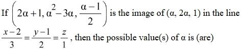
Hint 1: For a mirror image in a line, the segment is perpendicular to the line and its midpoint lies on the line.
Hint 2: (Q − P)·(3, 2, 1) = 0 gives candidate values of α. Then check the midpoint condition for each.
What this tests: Image of a point in a line.
1. Perpendicular condition: α = 3 or α = 1/4.
2. α = 3: midpoint (5, 3, 1) satisfies (x − 2)/3 = (y − 1)/2 = z = 1 ✓.
3. α = 1/4: midpoint (7/8, −3/32, 5/16) is not on the line ✗.
4. Only α = 3.
Answer: (1)
If this felt hard: The trap is keeping α = 1/4 without checking the midpoint. Revise 'Three Dimensional Geometry'.
Claude’s answer: 1 · NTA final key: 1 · agrees · Answer recomputed with SymPy (tools/verify_pyq_solutions.py)
Q15 · Mathematics · MCQ · ID 695278390
(1)
(2)
(3)
(4)
Hint 1: Dot A with u and with v. Note u·(u × v) = v·(u × v) = 0.
Hint 2: |u × v| = √3/2 with an acute angle gives u·v = 1/2. So A·u = λ + 1/2 and A·v = λ/2 + 1.
What this tests: Dot and cross products of unit vectors.
1. Eliminate the constants: (4/3)(A·u) − (2/3)(A·v) = (4/3)λ + 2/3 − λ/3 − 2/3 = λ.
Answer: (1)
If this felt hard: Revise 'Vector Algebra'. Dotting with each vector is the standard way to pull out coefficients.
Claude’s answer: 1 · NTA final key: 1 · agrees · Answer recomputed with SymPy (tools/verify_pyq_solutions.py)
Q16 · Mathematics · MCQ · ID 695278391
(1)
(2)
(3)
(4)
Hint 1: Put x = 0 in the functional equation.
Hint 2: f(y) = f(0) + 2y2 + y = 2y2 + y − 1. Substitute back to find α.
What this tests: Functional equations.
1. f(x) = 2x2 + x − 1, and f(1) = 2 ✓.
2. f(x + y) − f(x) − 2y2 − y = 4xy, so α = 4.
3. Σn=1..5(4 + 2n2 + n − 1) = 2(55) + 15 + 15 = 140.
Answer: (2)
If this felt hard: Revise 'Relations and Functions'. Substituting 0 is usually the first move.
Claude’s answer: 2 · NTA final key: 2 · agrees · Answer recomputed with SymPy (tools/verify_pyq_solutions.py)
Q17 · Mathematics · MCQ · ID 695278392
(1)
(2)
(3)
(4)
Hint 1: Fix c. Then a + b = 22 − 2c has 23 − 2c solutions in non-negative integers.
Hint 2: c goes from 0 to 11.
What this tests: Counting non-negative integer solutions.
1. n(A) = Σc=0..11(23 − 2c) = 12 × 23 − 2 × 66 = 144.
Answer: (3)
If this felt hard: Revise 'Permutations and Combinations'. Fixing the variable with the coefficient 2 is the easy route.
Claude’s answer: 3 · NTA final key: 3 · agrees · Answer recomputed with SymPy (tools/verify_pyq_solutions.py)
Q18 · Mathematics · MCQ · ID 695278393
(1)
(2)
(3)
(4)
Hint 1: Both curves are parabolas opening along the x-axis. Integrate with respect to y.
Hint 2: x = −3y2 and x = 1 − 4y2 meet at y = ±1. Area = ∫ from −1 to 1 of [(1 − 4y2) − (−3y2)] dy.
What this tests: Area between curves (horizontal strips).
1. Area = ∫ from −1 to 1 of (1 − y2) dy = 2 − 2/3 = 4/3.
Answer: (3)
If this felt hard: Revise 'Application of Integrals'. When curves are x = f(y), integrate in y.
Claude’s answer: 3 · NTA final key: 3 · agrees · Answer recomputed with SymPy (tools/verify_pyq_solutions.py)
Q19 · Mathematics · MCQ · ID 695278394
(1)
(2)
(3)
(4)
Hint 1: This is linear in y. Try to split the coefficient of y into two simple log-derivatives.
Hint 2: P = 3x2/(x3 + 2) + 2e−2x/(2 + e−2x). So the integrating factor is (x3 + 2)/(2 + e−2x).
What this tests: Linear differential equations with a tricky integrating factor.
1. d/dx[y·(x3 + 2)/(2 + e−2x)] = x3 + 2.
2. y(x3 + 2)/(2 + e−2x) = x4/4 + 2x + C. At x = 0: (3/2)(2/3) = 1 = C.
3. At x = 1: y × 3/(2 + e−2) = 13/4, so y(1) = (13/12)(2 + e−2).
Answer: (4), α = 13/12
If this felt hard: Splitting P into f′/f pieces is the key. Revise 'Differential Equations'.
Claude’s answer: 4 · NTA final key: 4 · agrees · Answer recomputed with SymPy (tools/verify_pyq_solutions.py)
Q20 · Mathematics · MCQ · ID 695278395
(1)
(2)
(3)
(4)
Hint 1: cot−1(1 + x + x2) = tan−1(1/(1 + x(x + 1))). Does that look like a tan(A − B) form?
Hint 2: tan−1[((x + 1) − x)/(1 + x(x + 1))] = tan−1(x + 1) − tan−1x. Use ∫tan−1u du = u tan−1u − ½ln(1 + u2).
What this tests: Telescoping inverse-tan integrals.
1. ∫ from 0 to 1 = ∫ from 1 to 2 of tan−1u du − ∫ from 0 to 1 of tan−1x dx.
2. = [2tan−12 − ½ln5 − π/4 + ½ln2] − [π/4 − ½ln2].
3. = 2tan−12 − ½ln(5/4) − π/2.
Answer: (4)
If this felt hard: Revise 'Inverse Trigonometric Functions' (tan−1a − tan−1b) and 'Integrals' (by parts).
Claude’s answer: 4 · NTA final key: 4 · agrees · Answer recomputed with SymPy (tools/verify_pyq_solutions.py)
Q21 · Mathematics · Numerical · ID 695278396
Hint 1: Count the 3-term increasing APs from 1 to 31: choose the first term a and the difference d with a + 2d ≤ 31.
Hint 2: For each d from 1 to 15 there are 31 − 2d choices of a. Total ways to choose 3 dates = 31C3.
What this tests: Probability of an AP among chosen numbers.
1. APs = Σd=1..15(31 − 2d) = 465 − 240 = 225.
2. 31C3 = 4495. Probability = 225/4495 = 45/899.
3. a + b = 944.
Answer: 944
If this felt hard: Revise 'Probability'. Counting by the common difference is the clean way.
Claude’s answer: 944 · NTA final key: 944 · agrees · Answer recomputed with SymPy (tools/verify_pyq_solutions.py)
Q22 · Mathematics · Numerical · ID 695278397
Hint 1: Write g on x < 0 and on x ≥ 0 separately. f(|x|) always uses the x ≥ 0 formula.
Hint 2: g = (x2 − 5|x| + 6) + |f(x)|. At x = 0, |f| jumps from e−1 to 6. For x ≥ 0, |x2 − 5x + 6| has corners at 2 and 3.
What this tests: Continuity and differentiability of piecewise and modulus functions.
1. Discontinuous only at x = 0: α = 1.
2. Not differentiable at x = 0 (discontinuous), 2 and 3 (corners of |(x − 2)(x − 3)|): β = 3.
3. α + β = 4.
Answer: 4
If this felt hard: Remember a discontinuous point is also non-differentiable. Revise 'Continuity and Differentiability'.
Claude’s answer: 4 · NTA final key: 4 · agrees · Answer recomputed with SymPy (tools/verify_pyq_solutions.py)
Q23 · Mathematics · Numerical · ID 695278398
Hint 1: x − √3|y| = α gives two half-lines from P(α, 0) at ±30° to the x-axis. What triangle is PAB?
Hint 2: PA = PB = α with angle 60° between them, so PAB is equilateral. Q is the midpoint of AB on the bisector (the x-axis).
What this tests: Geometry of half-lines; equilateral triangle.
1. PQ = α cos 30° = α√3/2 = 9/2, so α = 3√3.
2. Circumradius of an equilateral triangle = side/√3 = 3.
3. α2/R = 27/3 = 9.
Answer: 9
If this felt hard: A quick sketch makes it obvious. Revise 'Straight Lines'.
Claude’s answer: 9 · NTA final key: 9 · agrees · Answer recomputed with SymPy (tools/verify_pyq_solutions.py)
Q24 · Mathematics · Numerical · ID 695278399
Hint 1: Take A and C as (4t2, 8t) on the parabola. B is t = 1. Use the chord slope 2/(t1 + t2).
Hint 2: Right angle at B: (2/(t1 + 1))(2/(t2 + 1)) = −1, so (t1 + 1)(t2 + 1) = −4. Write the centroid in terms of s = t1 + t2.
What this tests: Parametric points on a parabola; locus of a centroid.
1. t1t2 = −5 − s and t12 + t22 = s2 + 2s + 10.
2. Centroid: y = 8(1 + s)/3 and x = (4(s + 1)2 + 40)/3.
3. Eliminate s: x = 3y2/16 + 40/3, i.e. y2 = (16/3)(x − 40/3). Latus rectum = 16/3.
4. Three times = 16.
Answer: 16
If this felt hard: Revise 'Conic Sections': the parabola y2 = 4ax with point (at2, 2at).
Claude’s answer: 16 · NTA final key: 16 · agrees · Answer recomputed with SymPy (tools/verify_pyq_solutions.py)
Q25 · Mathematics · Numerical · ID 695278400
Hint 1: Evaluate the first integral directly, then differentiate the whole equation.
Hint 2: ∫ from 0 to x of tan(t − x) dt = ln cos x. Differentiating: f′ = −tan x − f tan x.
What this tests: Integral equations solved by differentiating.
1. f′ = −tan x (1 + f). With g = 1 + f: g′/g = −tan x, so g = C cos x. f(0) = 0 gives C = 1.
2. f = cos x − 1.
3. f″(π/6) = −√3/2, 12f′(−π/6) = 12 × (1/2) = 6, f(π/6) = √3/2 − 1.
4. Sum = 5.
Answer: 5
If this felt hard: Revise 'Differential Equations' and the Leibniz rule for differentiating integrals.
Claude’s answer: 5 · NTA final key: 5 · agrees · Answer recomputed with SymPy (tools/verify_pyq_solutions.py)
Q26 · Physics · MCQ · ID 695278401
(1) 
(2)
(3)
(4)
Hint 1: Write each quantity in terms of a formula you know: E = hν, eV0 = KE, φ is an energy, ν0 is a frequency.
Hint 2: h = E/ν = ML2T−1. V = W/q = ML2T−3A−1. Energy = ML2T−2. Frequency = T−1.
What this tests: Dimensions of photoelectric quantities.
1. A-III, B-IV, C-I, D-II.
Answer: (1)
If this felt hard: Revise 'Units and Measurements'.
Claude’s answer: 1 · NTA final key: 1 · agrees · Theory question: not computable, needs a teacher’s review
Q27 · Physics · MCQ · ID 695278402
(1) 
(2)
(3)
(4) 
Hint 1: Work relative to car A.
Hint 2: The stone leaves B with speed v relative to B, so its ground speed is 80 + v. Relative to A it is 80 + v − 100.
What this tests: Relative velocity in one dimension.
1. 5 m/s = 18 km/h.
2. 80 + v − 100 = 18, so v = 38 km/h.
Answer: (3)
If this felt hard: Revise 'Motion in a Straight Line' (relative velocity). Convert m/s to km/h (× 18/5).
Claude’s answer: 3 · NTA final key: 3 · agrees · Answer recomputed by script (tools/verify_pyq_solutions.py)
Q28 · Physics · MCQ · ID 695278403
(1)
(2)
(3)
(4)
Hint 1: Constant force from rest: r = ½at2.
Hint 2: a = F/m = (50, 100) m/s2. At t = 2 s: r = (100, 200) m.
What this tests: Kinematics under constant force.
1. 2x = 100, so x = 50; 5y = 200, so y = 40.
2. x : y = 5 : 4.
Answer: (4)
If this felt hard: Revise 'Laws of Motion'. Convert 100 g to 0.1 kg.
Claude’s answer: 4 · NTA final key: 4 · agrees · Answer recomputed by script (tools/verify_pyq_solutions.py)
Q29 · Physics · MCQ · ID 695278404
(1)
(2) 
(3) 
(4)
Hint 1: The angle with the horizontal is given by tan θ = vy/vx.
Hint 2: vx = 24 and vy = 43.6 − 9.8t.
What this tests: Velocity direction of a projectile.
1. At t = 2: vy = 24, so tan θ = 1 and θ = 45°.
Answer: (2)
If this felt hard: Revise 'Motion in a Plane'.
Claude’s answer: 2 · NTA final key: 2 · agrees · Answer recomputed by script (tools/verify_pyq_solutions.py)
Q30 · Physics · MCQ · ID 695278405
(1)
(2)
(3)
(4)
Hint 1: g at height h: g′ = gR2/(R + h)2.
Hint 2: g/9 means (R + h)2 = 9R2.
What this tests: Variation of g with height.
1. R + h = 3R, so h = 2R.
Answer: (3)
If this felt hard: The trap √3R comes from forgetting the square. Revise 'Gravitation'.
Claude’s answer: 3 · NTA final key: 3 · agrees · Answer recomputed by script (tools/verify_pyq_solutions.py)
Q31 · Physics · MCQ · ID 695278406
(1) 
(2) 
(3) 
(4) 
Hint 1: Find the tension in each string first. String A holds both blocks.
Hint 2: TA = 3Mg and TB = 2Mg. Elongation = TL/(AY).
What this tests: Elongation of wires under load.
1. ΔLA/ΔLB = (3/2) × (LA/LB) × (YB/YA) = 1.5 × 2 × 2 = 6.
Answer: (4)
If this felt hard: The usual slip is taking TA = Mg. Revise 'Mechanical Properties of Solids'.
Claude’s answer: 4 · NTA final key: 4 · agrees · Answer recomputed by script (tools/verify_pyq_solutions.py)
Q32 · Physics · MCQ · ID 695278407
(1)
(2)
(3)
(4)
Hint 1: Use continuity: A1v1 = (total outlet area) × v2.
Hint 2: Hose 30 cm2 at 0.5 m/s. Outlets: 10 × 15 mm2 = 1.5 cm2.
What this tests: Equation of continuity.
1. 30 × 0.5 = 1.5 × v2, so v2 = 10 m/s.
Answer: (2)
If this felt hard: Convert mm2 to cm2 carefully (1 cm2 = 100 mm2). Revise 'Mechanical Properties of Fluids'.
Claude’s answer: 2 · NTA final key: 2 · agrees · Answer recomputed by script (tools/verify_pyq_solutions.py)
Q33 · Physics · MCQ · ID 695278408
(1) 
(2)
(3) 
(4) 
Hint 1: Average KE of a molecule depends only on temperature. Does vrms depend on mass?
Hint 2: KEavg = (3/2)kT; vrms = √(3RT/M).
What this tests: Kinetic theory: KE and r.m.s. speed.
1. A: same KE means same T. True.
2. R: vrms depends on M, so H2 is faster. False.
Answer: (3)
If this felt hard: Revise 'Kinetic Theory'.
Claude’s answer: 3 · NTA final key: 3 · agrees · Theory question: not computable, needs a teacher’s review
Q34 · Physics · MCQ · ID 695278409
(1)
(2)
(3)
(4)
Hint 1: Linear expansion: ΔL = L α ΔT, where L is the length at the start of that step.
Hint 2: T3 − T2 = T2 − T1 = ΔT. The second step starts from length L + ΔL1.
What this tests: Thermal expansion.
1. ΔL1 = LαΔT.
2. ΔL2 = (L + ΔL1)αΔT = LαΔT(1 + αΔT) = ΔL1(1 + αΔT).
Answer: (4)
If this felt hard: Revise 'Thermal Properties of Matter'.
Claude’s answer: 4 · NTA final key: 4 · agrees · Theory question: not computable, needs a teacher’s review
Q35 · Physics · MCQ · ID 695278410
(1)
(2)
(3)
(4)
Hint 1: The axis A is a tangent in the plane of the disc. Find I about it.
Hint 2: I about a diameter = MR2/4. Parallel axes: IA = MR2/4 + MR2 = 5MR2/4. Physical pendulum: T = 2π√(I/(Mgd)) with d = R.
What this tests: Physical pendulum; parallel axis theorem.
1. T = 2π√((5MR2/4)/(MgR)) = 2π√(5R/4g).
Answer: (1)
If this felt hard: Revise 'Oscillations' and 'Rotational Motion'.
Claude’s answer: 1 · NTA final key: 1 · agrees · Answer recomputed by script (tools/verify_pyq_solutions.py)
Q36 · Physics · MCQ · ID 695278411
(1)
(2)
(3)
(4)
Hint 1: For a dipole in a field, ω = √(pE/I). How does the net field change?
Hint 2: Net field = E0(î + 2ĵ + 2k̂), with magnitude 3E0. So ω becomes √3 times.
What this tests: Oscillation of a dipole in an electric field.
1. ω′/ω = √3 ≈ 1.73.
2. Change ≈ 73%.
Answer: (1)
If this felt hard: Revise 'Electric Charges and Fields': torque on a dipole.
Claude’s answer: 1 · NTA final key: 1 · agrees · Answer recomputed by script (tools/verify_pyq_solutions.py)
Q37 · Physics · MCQ · ID 695278412
(1) 
(2)
(3)
(4)
Hint 1: Follow the wires: the top wire joins A to the node between C2 and C3. Name the nodes and redraw.
Hint 2: C1 and C2 both lie between A and node N1: parallel (2 μF). C4 goes from N1 to B. C3 goes directly from A to B.
What this tests: Capacitor networks (node method).
1. (C1 ∥ C2) = 2 μF in series with C4 = 2 μF gives 1 μF.
2. In parallel with C3 = 1 μF: total 2 μF.
Answer: (1)
If this felt hard: Label the nodes and redraw: wires make some points the same node. Revise 'Electrostatic Potential and Capacitance'.
Claude’s answer: 1 · NTA final key: 1 · agrees · Answer recomputed by script (tools/verify_pyq_solutions.py)
Q38 · Physics · MCQ · ID 695278413
(1) 
(2)
(3)
(4)
Hint 1: Check each statement on its own, then ask whether R explains A.
Hint 2: Inside a conductor in electrostatics E = 0, so net charge stays on the surface. Between capacitor plates there is a field.
What this tests: Conductors in electrostatics.
1. A: true. R: true (charges between the plates feel qE).
2. R is about the region between plates, not the inside of a conductor, so it is not the explanation.
Answer: (2)
If this felt hard: Revise 'Electrostatic Potential and Capacitance'.
Claude’s answer: 2 · NTA final key: 2 · agrees · Theory question: not computable, needs a teacher’s review
Q39 · Physics · MCQ · ID 695278414
(1)
(2)
(3)
(4)
Hint 1: B = μ0μrH.
Hint 2: H = B/(μ0μr) = 1/(4π × 10−7 × 400).
What this tests: Magnetic intensity and permeability.
1. H = 1/(1.6π × 10−4) = 105/(16π) A/m.
2. α = 1/(16π).
Answer: (2)
If this felt hard: Revise 'Magnetism and Matter'.
Claude’s answer: 2 · NTA final key: 2 · agrees · Answer recomputed by script (tools/verify_pyq_solutions.py)
Q40 · Physics · MCQ · ID 695278415
(1)
(2)
(3)
(4)
Hint 1: The wave travels along +x (phase 2πνt − 2πx/λ). E × B must point along +x.
Hint 2: |E| = cB0 = νλB0. B is along ĵ; (−k̂) × ĵ = î.
What this tests: E and B directions in an EM wave.
1. E = −νλB0 sin(2πνt − 2πx/λ) k̂.
Answer: (1)
If this felt hard: Revise 'Electromagnetic Waves'.
Claude’s answer: 1 · NTA final key: 1 · agrees · Theory question: not computable, needs a teacher’s review
Q41 · Physics · MCQ · ID 695278416
(1) 
(2)
(3)
(4)
Hint 1: Lens maker's formula with R1 = R and R2 = −R.
Hint 2: 1/f = (μ − 1)(2/R) = 0.8/R.
What this tests: Lens maker's formula.
1. f/R = 1/0.8 = 1.25.
Answer: (4)
If this felt hard: Revise 'Ray Optics'.
Claude’s answer: 4 · NTA final key: 4 · agrees · Answer recomputed by script (tools/verify_pyq_solutions.py)
Q42 · Physics · MCQ · ID 695278417
(1)
(2) 
(3)
(4)
Hint 1: Unpolarised light loses half at the first polariser. Then use Malus's law for each angle step.
Hint 2: Without the third: I0/2 × cos260°. With it: I0/2 × cos230° × cos230°.
What this tests: Malus's law with several polarisers.
1. Without: I0/8. With: I0/2 × 9/16 = 9I0/32.
2. Ratio = (9/32)/(1/8) = 9/4.
Answer: (3)
If this felt hard: Revise 'Wave Optics'. Use the angle between successive axes, not between each axis and the horizontal.
Claude’s answer: 3 · NTA final key: 3 · agrees · Answer recomputed by script (tools/verify_pyq_solutions.py)
Q43 · Physics · MCQ · ID 695278418
(1)
(2)
(3)
(4)
Hint 1: Rebounding needs a very close approach to a tiny, massive nucleus. Which statements describe that?
Hint 2: The nucleus is tiny (A); only a few particles have a very small impact parameter (C), i.e. nearly head-on (E).
What this tests: Rutherford scattering.
1. A, C and E are correct. B (equal charge) and D (some much faster) are false.
Answer: (4)
If this felt hard: Revise 'Atoms'.
Claude’s answer: 4 · NTA final key: 4 · agrees · Theory question: not computable, needs a teacher’s review
Q44 · Physics · MCQ · ID 695278419
(1)
(2)
(3)
(4)
Hint 1: λ = h/p and p = √(2mqV). Both particles have the same charge magnitude and V.
Hint 2: λ ∝ 1/√m.
What this tests: de Broglie wavelength of accelerated charges.
1. λe/λp = √(mp/me).
Answer: (1)
If this felt hard: Revise 'Dual Nature of Matter and Radiation'.
Claude’s answer: 1 · NTA final key: 1 · agrees · Theory question: not computable, needs a teacher’s review
Q45 · Physics · MCQ · ID 695278420
(1)
(2) 
(3) 
(4) 
Hint 1: In reverse bias, which carriers carry the tiny current: majority or minority?
Hint 2: The reverse saturation current is due to minority carriers.
What this tests: Reverse-biased p-n junction.
1. A: true (small, nearly constant reverse current, then breakdown).
2. R: false (it is minority carriers).
Answer: (3)
If this felt hard: Revise 'Semiconductor Electronics'.
Claude’s answer: 3 · NTA final key: 3 · agrees · Theory question: not computable, needs a teacher’s review
Q46 · Physics · Numerical · ID 695278421
Hint 1: The maximum safe current through the Zener = Pmax/VZ.
Hint 2: Imax = 0.5/10 = 0.05 A. The series resistor drops 25 − 10 = 15 V.
What this tests: Zener diode current limiting.
1. Rmin = 15/0.05 = 300 Ω.
Answer: 300
If this felt hard: Revise 'Semiconductor Electronics'.
Claude’s answer: 300 · NTA final key: 300 · agrees · Answer recomputed by script (tools/verify_pyq_solutions.py)
Q47 · Physics · Numerical · ID 695278422
Hint 1: The farthest point on level ground is the maximum range, at 45°.
Hint 2: Rmax = u2/g.
What this tests: Maximum range of a projectile.
1. u2 = 6.4 × 10 = 64, so u = 8 m/s.
Answer: 8
If this felt hard: Revise 'Motion in a Plane'.
Claude’s answer: 8 · NTA final key: 8 · agrees · Answer recomputed by script (tools/verify_pyq_solutions.py)
Q48 · Physics · Numerical · ID 695278423
Hint 1: P is on the axis of one magnet and on the equatorial line of the other, 5 cm from each.
Hint 2: Axial: B = (μ0/4π)(2M/d3); equatorial: B = (μ0/4π)(M/d3). They are perpendicular.
What this tests: Fields of bar magnets on axial and equatorial lines.
1. Axial: 10−7 × 2 × 3√5/(0.05)3 = 4.8√5 × 10−3 T. Equatorial: 2.4√5 × 10−3 T.
2. |B| = √5 × 10−3 × √(4.82 + 2.42) = √5 × 2.4√5 × 10−3 = 12 × 10−3 T.
Answer: 12
If this felt hard: Revise 'Magnetism and Matter'.
Claude’s answer: 12 · NTA final key: 12 · agrees · Answer recomputed by script (tools/verify_pyq_solutions.py)
Q49 · Physics · Numerical · ID 695278424
Hint 1: τ = NIAB sin θ, where θ is the angle between the coil's axis and B.
Hint 2: N = 125, I = 1 A, A = π(0.02)2, B = 0.4 T, θ = 30°.
What this tests: Torque on a current loop.
1. τ = 125 × 3.14 × 4×10−4 × 0.4 × 0.5 = 0.0314 N m = 314 × 10−4 N m.
Answer: 314
If this felt hard: Revise 'Moving Charges and Magnetism'.
Claude’s answer: 314 · NTA final key: 314 · agrees · Answer recomputed by script (tools/verify_pyq_solutions.py)
Q50 · Physics · Numerical · ID 695278425
Hint 1: A sheet of thickness t adds an extra path (μ − 1)t. The central fringe moves by that many wavelengths.
Hint 2: (μ − 1)t = 7λ.
What this tests: Fringe shift due to a thin sheet in YDSE.
1. t = 7 × 450/0.56 nm = 5625 nm.
Answer: 5625
If this felt hard: Revise 'Wave Optics'.
Claude’s answer: 5625 · NTA final key: 5625 · agrees · Answer recomputed by script (tools/verify_pyq_solutions.py)
Q51 · Chemistry · MCQ · ID 695278426
(1)
(2)
(3)
(4)
Hint 1: Convert each to moles of atoms.
Hint 2: Cyclohexane C6H12: 18 atoms. Sucrose C12H22O11: 45 atoms, M = 342. At STP (1 bar), 1 mol of gas = 22.7 L.
What this tests: Mole concept.
1. A: 2 × 18 = 36 mol atoms. B: 2 mol × 45 = 90. C: 90.8/22.7 = 4 mol H2, so 8 mol atoms.
2. B > A > C.
Answer: (4)
If this felt hard: Revise 'Some Basic Concepts of Chemistry'. The current STP (1 bar) uses 22.7 L/mol.
Claude’s answer: 4 · NTA final key: 4 · agrees · Answer recomputed by script (tools/verify_pyq_solutions.py)
Q52 · Chemistry · MCQ · ID 695278427
(1) 
(2) 
(3)
(4) 
Hint 1: Bohr radius r ∝ n2/Z.
Hint 2: Compute n2/Z for each: A 1/1, B 1/2, C 4/2, D 1/3, E 4/4.
What this tests: Bohr radius of hydrogen-like species.
1. A and E both give 1.
Answer: (2)
If this felt hard: Revise 'Structure of Atom'.
Claude’s answer: 2 · NTA final key: 2 · agrees · Answer recomputed by script (tools/verify_pyq_solutions.py)
Q53 · Chemistry · MCQ · ID 695278428
(1)
(2)
(3)
(4)
Hint 1: π orbitals come from sideways overlap of p orbitals perpendicular to the axis. Antibonding means opposite phases meet.
Hint 2: Look for two side-by-side p lobes with opposite shading facing each other (a node between the nuclei).
What this tests: Shapes of molecular orbitals.
1. Option 3 shows p lobes perpendicular to z with opposite phases on the two atoms: π*.
2. Option 4 is head-on overlap (σ), and option 2 shows in-phase lobes (π bonding).
Answer: (3)
If this felt hard: Revise 'Chemical Bonding': MO theory.
Claude’s answer: 3 · NTA final key: 3 · agrees · Theory question: not computable, needs a teacher’s review
Q54 · Chemistry · MCQ · ID 695278429
(1)
(2)
(3)
(4)
Hint 1: Compare effective concentrations: i × C on each side.
Hint 2: K4[Fe(CN)6]: i = 5, so 0.5 M. FeCl3: i = 4, so 0.4 M. Ions don't cross a semipermeable membrane.
What this tests: Osmosis with electrolytes (van't Hoff factor).
1. Side y is less concentrated: hypotonic. True.
2. No blue colour (ions can't meet), ions don't pass, and reversing osmosis needs more than the osmotic pressure difference, not 'any' pressure.
Answer: (3)
If this felt hard: Revise 'Solutions'.
Claude’s answer: 3 · NTA final key: 3 · agrees · Theory question: not computable, needs a teacher’s review
Q55 · Chemistry · MCQ · ID 695278430
(1)
(2)
(3)
(4)
Hint 1: How much of the acid does 14.2 mL of NaOH neutralise?
Hint 2: The full amount needs 28.4 mL, so 14.2 mL neutralises half: [salt] = [acid].
What this tests: Buffer at half-neutralisation.
1. pH = pKa + log 1 = 4.75.
Answer: (2)
If this felt hard: Revise 'Equilibrium': the Henderson equation.
Claude’s answer: 2 · NTA final key: 2 · agrees · Answer recomputed by script (tools/verify_pyq_solutions.py)
Q56 · Chemistry · MCQ · ID 695278431
(1)
(2)
(3)
(4)
Hint 1: Name each mechanism: who attacks whom?
Hint 2: Williamson: alkoxide (nucleophile) on an alkyl halide. Friedel–Crafts: carbocation on the ring. Br2 with styrene: addition to C=C. Toluene + Cl2 in light: radicals.
What this tests: Reaction mechanisms.
1. A-III, B-IV, C-I, D-II.
Answer: (3)
If this felt hard: Revise 'Haloalkanes', 'Hydrocarbons' and 'Ethers'.
Claude’s answer: 3 · NTA final key: 3 · agrees · Theory question: not computable, needs a teacher’s review
Q57 · Chemistry · MCQ · ID 695278432
(1)
(2)
(3)
(4)
Hint 1: The second IE is always larger than the first: it removes an electron from a positive ion.
Hint 2: IE values are positive. Mg's second electron is still from 3s, so expect roughly double the first.
What this tests: Successive ionisation enthalpies.
1. Only +1450 kJ/mol is positive and larger than 737.
Answer: (3)
If this felt hard: Revise 'Classification of Elements and Periodicity'.
Claude’s answer: 3 · NTA final key: 3 · agrees · Theory question: not computable, needs a teacher’s review
Q58 · Chemistry · MCQ · ID 695278433
(1) 
(2) 
(3)
(4) 
Hint 1: Pauling electronegativity of Ge is 1.8 (NCERT). Which group 13 element has 1.8?
Hint 2: Tl (1.8). For Tl, the inert pair effect makes Tl+ more stable than Tl3+.
What this tests: Inert pair effect in group 13.
1. E = Tl. Tl3+ tends to gain electrons, so it is an oxidising agent (B) and E°(Tl3+/Tl) is positive (D).
2. Tl3+ is less stable than Tl+, so C is false; it is not a reducing agent, so A is false.
Answer: (3)
If this felt hard: Revise 'p-Block Elements' (group 13): NCERT electronegativity values and the inert pair effect.
Claude’s answer: 3 · NTA final key: 3 · agrees · Theory question: not computable, needs a teacher’s review
Q59 · Chemistry · MCQ · ID 695278434
(1) 
(2) 
(3) 
(4)
Hint 1: Write the 4f counts: Eu 4f7, Gd 4f75d1, Dy 4f10, Ho 4f11, Yb 4f14, Hf 4f145d2, Lu 4f145d1, Tm 4f13.
Hint 2: Find the pairs with equal 4f counts.
What this tests: Electronic configurations of lanthanides.
1. Eu and Gd: 7 and 7 ✓. Yb and Hf: 14 and 14 ✓.
2. Dy/Ho and Lu/Tm differ.
Answer: (4), A and C
If this felt hard: Revise 'd- and f-Block Elements'. Gd keeps 4f7 by putting one electron in 5d.
Claude’s answer: 4 · NTA final key: 4 · agrees · Theory question: not computable, needs a teacher’s review
Q60 · Chemistry · MCQ · ID 695278435
(1)
(2)
(3)
(4)
Hint 1: Ni2+ is d8. In both octahedral and tetrahedral fields, how many electrons are unpaired?
Hint 2: d8 has 2 unpaired electrons in octahedral and in tetrahedral complexes. Absorption frequency ∝ Δ: en > NH3 > Cl− (and Δt is smaller).
What this tests: Crystal field theory for Ni(II) complexes.
1. Unpaired electrons: 2, 2, 2.
2. Frequency order: (A) > (C) > (B).
Answer: (1)
If this felt hard: Revise 'Coordination Compounds'.
Claude’s answer: 1 · NTA final key: 1 · agrees · Theory question: not computable, needs a teacher’s review
Q61 · Chemistry · MCQ · ID 695278436
(1)
(2)
(3)
(4)
Hint 1: Bond length rises as bond order falls. Which C−O bond has the most single-bond character?
Hint 2: Acetone has a normal C=O. In acetate the negative charge is shared over two O atoms (bond order 1.5). Tropone's C=O is polarised by the aromatic tropylium form.
What this tests: Resonance and bond length.
1. Acetate: the C−O bond order is 1.5, so it is the longest.
2. Tropone: the C=O is partly single (aromatic C+−O− form), so it is longer than acetone's.
3. Claude's order: z > x > y.
Answer: (3)
If this felt hard: Revise resonance in 'Basic Principles of Organic Chemistry'.
Claude’s answer: 3 · NTA final key: 4 · DISAGREES: flag for the owner · disputed
Note: DISPUTED: NTA's final key is option 4 (x > z > y). Claude's reasoning gives z > x > y (option 3): acetate's C−O has bond order 1.5 and typical lengths are about 1.26 Å, versus about 1.24 Å reported for tropone. Not certain; the key is unchanged. Please ask a chemistry teacher.
Q62 · Chemistry · MCQ · ID 695278437
(1)
(2) 
(3)
(4) 
Hint 1: Highest Mn fluoride: MnF4 (+4). Highest Mn oxide: Mn2O7 (+7). So |x| = 3.
Hint 2: Find the ions with 3 unpaired electrons: Sc3+ d0, Zn2+ d10, V2+ d3, Fe2+ d6, Co2+ d7.
What this tests: Oxidation states of Mn; unpaired electrons.
1. V2+ (d3): 3 unpaired. Co2+ (d7, high spin): 3 unpaired. Fe2+ has 4.
Answer: (3), C and E
If this felt hard: Revise 'd- and f-Block Elements'. F can't stabilise Mn(VII) the way oxygen does (multiple bonding).
Claude’s answer: 3 · NTA final key: 3 · agrees · Theory question: not computable, needs a teacher’s review
Q63 · Chemistry · MCQ · ID 695278438
(1)
(2)
(3)
(4)
Hint 1: A straight line [R] vs t means zero order. Curves 2 and 3 are not zero order.
Hint 2: If 2 and 3 have the same order, the one that falls faster has the larger k.
What this tests: Concentration–time graphs and order.
1. Not all the same order (1 is zero order). 3 falls faster than 2, so k3 > k2 if the orders match. True.
2. k for zero order has units mol L−1 s−1, not s−1. HI on gold is zero order (like reaction 1, not 2).
Answer: (2)
If this felt hard: Revise 'Chemical Kinetics'.
Claude’s answer: 2 · NTA final key: 2 · agrees · Theory question: not computable, needs a teacher’s review
Q64 · Chemistry · MCQ · ID 695278439
(1) 
(2)
(3) 
(4)
Hint 1: Follow the steps: Br2 adds to C=C; excess NaNH2 does a double elimination to an alkyne; CH3I alkylates the terminal alkyne; Na/NH3 reduces it.
Hint 2: Styrene → dibromide → phenylacetylene (as its anion) → PhC≡CCH3 → trans-PhCH=CHCH3.
What this tests: Alkyne synthesis and Birch-type (Na/NH3) reduction.
1. Y = trans-1-phenylpropene, C9H10.
2. M = 108 + 10 = 118 g/mol.
Answer: (2)
If this felt hard: Revise 'Hydrocarbons': alkynes from dihalides; Na/NH3 gives trans-alkenes.
Claude’s answer: 2 · NTA final key: 2 · agrees · Answer recomputed by script (tools/verify_pyq_solutions.py)
Q65 · Chemistry · MCQ · ID 695278440
(1)
(2)
(3)
(4)
Hint 1: Look carefully at the four groups on the carbon. Are they all different?
Hint 2: CH3 and Me are the same group. A carbon with two identical groups is not a stereocentre.
What this tests: Chirality: a stereocentre needs four different groups.
1. The carbon carries Br, Cl and two methyls, so it is achiral.
2. The two drawings are the same molecule.
Answer: (2)
If this felt hard: A neat trap: the same group written two ways. Revise 'Haloalkanes' (stereochemistry).
Claude’s answer: 2 · NTA final key: 2 · agrees · Theory question: not computable, needs a teacher’s review
Q66 · Chemistry · MCQ · ID 695278441
(1)
(2)
(3)
(4)
Hint 1: Carboxylic acids are stronger than phenols. Within each type, an EWG (NO2) increases acidity and an EDG (OCH3) decreases it.
Hint 2: p-Nitrobenzoic > benzoic > p-nitrophenol > phenol > p-methoxyphenol.
What this tests: Acidity of phenols and carboxylic acids.
1. D > E > B > A > C.
Answer: (4)
If this felt hard: Revise 'Alcohols, Phenols and Ethers' and 'Carboxylic Acids'.
Claude’s answer: 4 · NTA final key: 4 · agrees · Theory question: not computable, needs a teacher’s review
Q67 · Chemistry · MCQ · ID 695278442
(1)
(2)
(3)
(4)
Hint 1: The strongest conjugate acid comes from the weakest base.
Hint 2: −NO2 withdraws electrons from N, making p-nitroaniline the weakest base.
What this tests: Basicity of substituted anilines.
1. p-Nitroaniline gives the strongest conjugate acid.
Answer: (3)
If this felt hard: Revise 'Amines'.
Claude’s answer: 3 · NTA final key: 3 · agrees · Theory question: not computable, needs a teacher’s review
Q68 · Chemistry · MCQ · ID 695278443
(1)
(2)
(3)
(4)
Hint 1: HNO3 oxidises both ends to COOH. Which tetrose gives a meso (optically inactive) diacid?
Hint 2: Meso tartaric acid needs both OH groups on the same side in the Fischer projection. D means the lowest OH is on the right.
What this tests: Fischer projections; meso compounds from sugars.
1. D-erythrose (both OH on the right) gives meso-tartaric acid.
Answer: (3)
If this felt hard: Revise 'Biomolecules' (Fischer projections, D/L) and stereochemistry (meso).
Claude’s answer: 3 · NTA final key: 3 · agrees · Theory question: not computable, needs a teacher’s review
Q69 · Chemistry · MCQ · ID 695278444
(1)
(2)
(3)
(4)
Hint 1: H2S in NH4OH is the group IV reagent. Which of these ions is in group IV?
Hint 2: Group II: Pb2+, Cu2+ (H2S in acid). Group III: Fe3+ (hydroxide). Group IV: Mn2+ (MnS).
What this tests: Group reagents in salt analysis.
1. Mn2+ precipitates as MnS.
2. The highest oxidation state of Mn is +7.
Answer: (4)
If this felt hard: Revise salt analysis in 'Principles Related to Practical Chemistry'.
Claude’s answer: 4 · NTA final key: 4 · agrees · Theory question: not computable, needs a teacher’s review
Q70 · Chemistry · MCQ · ID 695278445
(1)
(2) 
(3)
(4) 
Hint 1: Match each functional group with its test.
Hint 2: Lucas: alcohols. Hinsberg: amines. Tollens: aldehydes. Phthalein dye: phenols.
What this tests: Tests for functional groups.
1. A-III, B-I, C-IV, D-II.
Answer: (1)
If this felt hard: Revise 'Principles Related to Practical Chemistry'.
Claude’s answer: 1 · NTA final key: 1 · agrees · Theory question: not computable, needs a teacher’s review
Q71 · Chemistry · Numerical · ID 695278446
Hint 1: A bomb calorimeter measures ΔU. Convert it to ΔH, then use Hess's law.
Hint 2: Moles of ethanol = 3.365/46. ΔHc = ΔUc + ΔngRT with Δng = 2 − 3 = −1.
What this tests: Bomb calorimetry (ΔU to ΔH) and enthalpy of formation.
1. ΔUc = −99.472/0.07315 ≈ −1359.8 kJ/mol; ΔHc ≈ −1362.3 kJ/mol.
2. ΔHf = 2(−393.5) + 3(−285.8) − (−1362.3) ≈ −282 kJ/mol.
3. |ΔHf| ≈ 2.82 × 102, i.e. 3 to the nearest integer.
Answer: 3
If this felt hard: Revise 'Thermodynamics'. Water is liquid here, so count only gas moles in Δng.
Claude’s answer: 3 · NTA final key: 3 · agrees · Answer recomputed by script (tools/verify_pyq_solutions.py)
Q72 · Chemistry · Numerical · ID 695278447
Hint 1: Make a table: start with 1 mol of N2O5; 50% dissociates.
Hint 2: At equilibrium: N2O5 0.5, N2O4 0.5, O2 0.25 (total 1.25). Partial pressures at 2 atm: 0.8, 0.8, 0.4.
What this tests: ΔG° from an equilibrium constant.
1. Kp = (0.8)2(0.4)/(0.8)2 = 0.4.
2. ΔG° = −2.303RT log Kp = −2.303 × 8.314 × 323 × (−0.40) ≈ 2474 J/mol.
Answer: 2474
If this felt hard: Revise 'Equilibrium' and 'Thermodynamics'. log 0.4 = 2 log 2 − 1 = −0.40.
Claude’s answer: 2474 · NTA final key: 2474 · agrees · Answer recomputed by script (tools/verify_pyq_solutions.py)
Q73 · Chemistry · Numerical · ID 695278448
Hint 1: Mx+/M (+0.15 V) is the cathode and Fe is the anode. Use the Nernst equation to find n.
Hint 2: E°cell = 0.15 + 0.036 = 0.186 V. E = E° − (0.059/n) log Q with log Q = −2.
What this tests: Nernst equation; electrons transferred.
1. 0.2057 = 0.186 + 0.118/n, so n = 6.
2. n = lcm(x, 3) = 6 for a p-block metal ion Mx+, so x = 2.
Answer: 2
If this felt hard: Revise 'Electrochemistry'.
Claude’s answer: 2 · NTA final key: 2 · agrees · Answer recomputed by script (tools/verify_pyq_solutions.py)
Q74 · Chemistry · Numerical · ID 695278449
Hint 1: For first order, each equal time interval cuts the concentration by the same factor.
Hint 2: 0.65 → 0.00065 is a factor of 1000 in 20 min. 0.65 → 0.065 is a factor of 10.
What this tests: First-order kinetics (logarithmic decay).
1. A factor of 10 takes one third of the time taken for a factor of 1000.
2. x = 20/3 ≈ 7 min.
Answer: 7
If this felt hard: Revise 'Chemical Kinetics': t = (2.303/k) log([A]0/[A]).
Claude’s answer: 7 · NTA final key: 7 · agrees · Answer recomputed by script (tools/verify_pyq_solutions.py)
Q75 · Chemistry · Numerical · ID 695278450
Hint 1: Each mole of S ends up as 1 mole of BaSO4.
Hint 2: Moles of S = 0.4813/233. Mass of compound = 2.0×10−3 × 76 g.
What this tests: Estimation of sulphur.
1. S = 2.066×10−3 mol = 0.0661 g. Compound = 0.152 g.
2. %S = 43.5% = 435 × 10−1%.
Answer: 435
If this felt hard: Revise 'Purification and Characterisation of Organic Compounds'.
Claude’s answer: 435 · NTA final key: 435 · agrees · Answer recomputed by script (tools/verify_pyq_solutions.py)